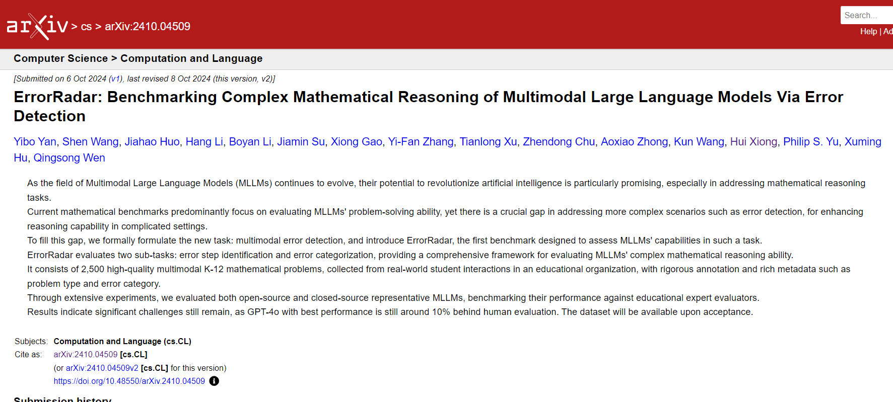
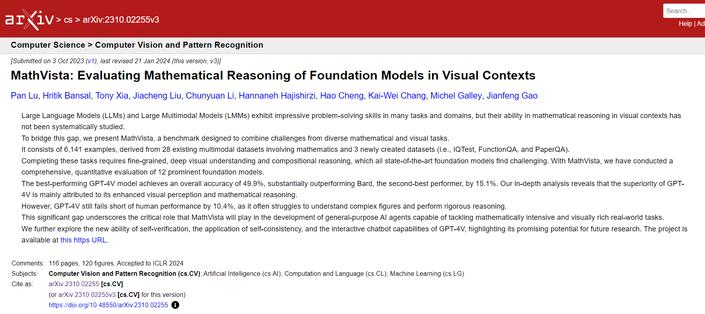

My Papers
While I don't have that much to show for it at the moment, trust me, it will take a while for your mouse wheel to be able to scroll to the bottom again in the near future.
Papers I have read

ErrorRadar: Benchmarking Complex Mathematical Reasoning of Multimodal Large Language Models Via Error Detection
